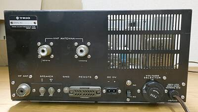
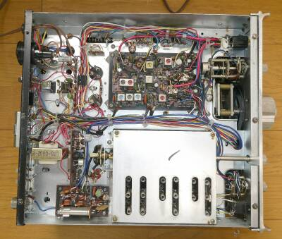
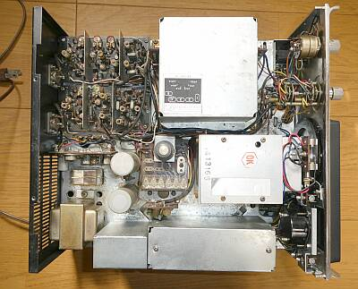
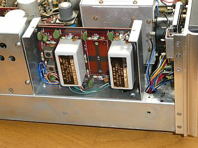
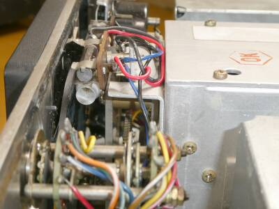

 |
こちらは、リアパネルの様子です
ＶＨＦコンバータ２つを内蔵しますので、パネルの穴はすべて埋まっています
ＡＣ電源
１００／１１７／２００／２４０Ｖに切り替え対応
ＤＣ１２Ｖ稼働もＯＫです |
 |
こちらが、下（底面）の様子です
シールド板に囲われていてるところはＲＦ部
丸見えの基板はＩＦ部です |
 |
シャーシ上面を撮したものです
上シールド（ＲＦユニット部）の背面側
ここに５０ＭＨｚ帯／１４４ＭＨｚ帯のコンバート基板が配されています
２８ＭＨｚ帯のカバー範囲が１．７ＭＨｚのため、５０ＭＨｚ帯の場合、「Ｂ」側に切り替えると、５１．７ＭＨｚ～５３．４ＭＨｚをカバーすることに、
１４４ＭＨｚ帯の場合、１４５．７ＭＨｚ～１４７．４ＭＨｚをカバーすることになります
ダイヤル読み取りに悩みます・・・
中央に見えるツマミは、ＶＦＯと固定チャンネルを切り替えるロータリースイッチです |
 |
カスタム・スペシャル、あるいはカスタム・グレートであれば、本来ＣＷフィルタも装備されていますが、他に流用したのでしょう
本機では、取り外されていました（早速入手の機会があったので、組み入れました）
左から、FM（集中IFT)、AM、CW、SSB用フィルタの装着です
左上に見えるツマミは、ＶＦＯと固定チャンネルを切り替えるロータリースイッチです |
 |
メインダイヤル表示部 裏側
ガラスヒューズ型のランプが採用されていますが、ダイヤルスケールの劣化？のせいか０ー５００の数字が読みづらくなっていたので、その下にＬＥＤのランプを追加しました
ＢＡ９ DC１２Vのものです |
|
見た目の状態は、年相応
電気的には、オリジナルの状態を維持していると思われます
感度だけで言えば、十分なレベルです（下段実測値を参照） |
|
| ＢＡＮＤ（ＭＨｚ） |
ＣＷ／ＳＳＢ
ＲＦ信号のＯＮ／ＯＦＦで
S/N１０ｄｂが得られる信号強度 |
ＣＷ／ＳＳＢ
参考
カタログ値 |
| １．８ |
０．２μV |
０．５μV |
| ３．６ |
０．２μV |
０．５μV |
| ７．１ |
０．２μV |
０．５μV |
| １４．１ |
０．１μV |
０．５μＶ |
| ２１．１ |
０．２μＶ |
０．５μＶ |
| ２８．６ |
０．２μＶ |
１．５μＶ |
| ５０．１ |
０．２μＶ |
１．５μＶ |
| １４４．１ |
０．２μＶ |
２．０μV |
|